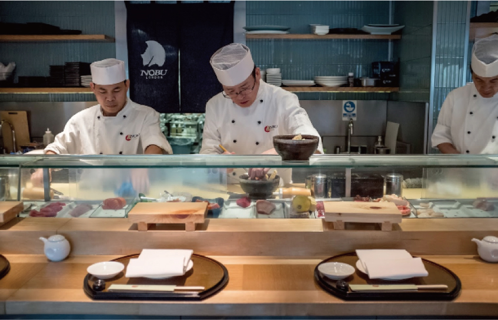
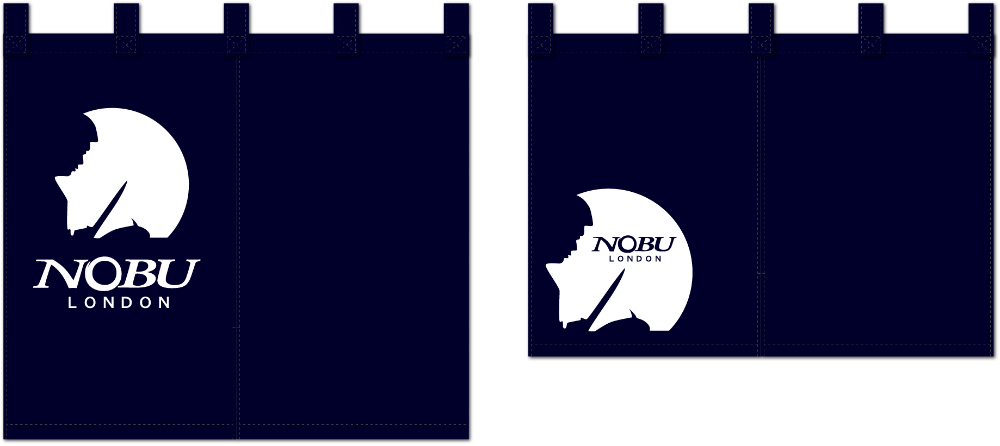

<main class="main">
    <section class="section_1">
        <div class="container">
            <div class="contents_top">
                <h1 class="tittle">NOBU London</h1>
                <p class="description_en">2013  London, UK</p>
                <p class="description">ミシュラン1つ星を獲得しているNOBUロンドンでシェフとして勤務し、暖簾の制作も受注。<br>暖簾を縫製し、NOBUオリジナルロゴを暖簾にハンドスクリーンプリントで制作。</p>
            </div>
            <div class="box_style" >
                <p  class="shadow contents_img"></p>
                <p class="contents_img"></p>
            </div>
        </div>
    </section>
</main>